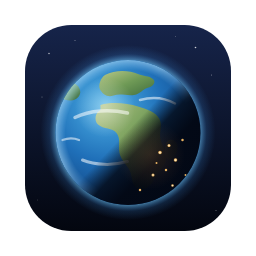

<!doctype html>
<!--
  Stills for the launch: ?scene=story | cover | social. The Earth images are real renders of
  web/index.html (produce.mjs stills -> build/launch/stills). Only the text is added here.
-->
<html lang="en">
<head>
<meta charset="utf-8">
<title>Earth Now stills</title>
<style>
  * { box-sizing: border-box; margin: 0; }
  html, body { width: 100%; height: 100%; overflow: hidden; background: #000; color: #fff;
    font-family: "Inter", sans-serif; -webkit-font-smoothing: antialiased; }
  .bg { position: absolute; inset: 0; width: 100%; height: 100%; object-fit: cover; }
  .abs { position: absolute; left: 0; right: 0; text-align: center; }
  .title { font-family: "Inter Display", "Inter", sans-serif; font-weight: 700; letter-spacing: .22em; text-indent: .22em;
    text-shadow: 0 2px 30px rgba(0,0,0,.55); }
  .line { font-family: "Inter Display", "Inter", sans-serif; font-weight: 600; text-shadow: 0 2px 24px rgba(0,0,0,.6); }
  .soft { color: #cfdcef; font-weight: 500; }
  .dot { opacity: .5; padding: 0 .4em; }
  .accent { color: #7cc8ff; }
</style>
</head>
<body>
<script>
const scene = new URLSearchParams(location.search).get('scene');
const img = (n) => ``;
const html = {
  story: `${img('hero-portrait')}
    <div class="abs title" style="top:285px;font-size:112px">EARTH NOW</div>
    <div class="abs line" style="top:420px;font-size:50px;line-height:1.2">The real Earth, right now,<br>as your Mac's desktop.</div>
    <div class="abs line soft" style="top:1335px;font-size:38px">Real sunlight<span class="dot">·</span>City lights<span class="dot">·</span>Live clouds</div>
    <div class="abs line" style="top:1400px;font-size:40px">Free &amp; Open Source<span class="dot">·</span><span class="accent">macOS 13+</span></div>`,
  cover: `${img('cover-portrait')}
    <div class="abs title" style="top:300px;font-size:104px">EARTH NOW</div>
    <div class="abs line soft" style="top:430px;font-size:42px">Live on your Mac's desktop.</div>`,
  social: `${img('social')}
    <div style="position:absolute;left:72px;top:0;bottom:0;display:flex;flex-direction:column;justify-content:center;width:600px">
      
      <div class="title" style="font-size:64px;text-indent:0;letter-spacing:.12em">EARTH NOW</div>
      <div class="line" style="font-size:36px;line-height:1.25;margin-top:18px">The real Earth, right now,<br>as your Mac's desktop.</div>
      <div class="line soft" style="font-size:25px;margin-top:22px">Free &amp; Open Source<span class="dot">·</span>macOS 13+</div>
    </div>`,
}[scene];
document.body.insertAdjacentHTML('beforeend', html);
</script>
</body>
</html>
